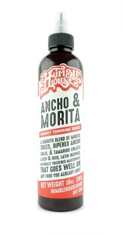
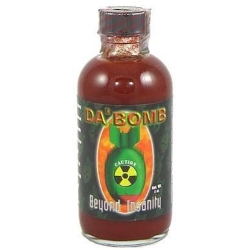

Why I Love Hot Sauce
Hot sauce is one of the human's greatest inventions of all time. For me a hot sauce must be well balanced with great flavors and the right amount of heat, that keeps the taste buds alive and ready for more. Currently I’m really into Humble House’s Ancho And Morita Hot Sauce. This sauce maker is straight from San Antonio, Texas. The Ancho And Morita hot sauce has an umami flavor that is packed with bold ancho and morita chilly notes. The sauce is aged for 30 days so the heat mellows, while other flavors mature. I love putting this hot sauce on pizza, but the makers recommend putting it on pork and ribs.

The Hottest Hot Sauce I have Tasted...
After making a trip to Fredericksburg, Texas, for some German food, I stumbled upon a small shop called Rustlin Rob’s Texas Gourmet Foods. I walked inside and found a palace of dipping sauces. From jams to cheeses, I tasted each jar of greatness. As I made my way to the far back of the store, I noticed an area that was behind the counter. A customer stood in the middle crying as he held a small cracker with a dot of what seemed to be hot sauce. I asked him, “what did you have?”. With a gasp of air he said, “Da Bomb!” Inspired by one of my favorite shows on Youtube: HotOnes, I started to look at the lineup of hot sauces leading up to Da Bomb. Knowing that this journey could possibly end my trip to Fredericksburg, I decided to embark on the challenge. After a few warmup tastes of ghost chili and reaper inspired sauces, I finally ended up on the Da Bomb. At this point my mind was starting to dip into the 4th dimension and my tough had become numb. I thought to myself well at least now it wont be as bad. The man looked at me and said, "so are you going to do it?" I looked at him and said, "yeah I guess so." I shook a small drop of sauce onto a final cracker and with my shaky hand I started to chew. I could feel my adrenaline and ears ring as nothing happened. I looked at the gentlemen and he look and me and said, "well how is it?” I looked at him and said, "it’s actually not that bad." He looked at me and smiled as he said goodbye. At that point I felt this weird sensation building at the back of my throat. The heat started to take over my thoughts as my taste buds reignited. It came in waves and I started to pace around the shop looking for something to eat. Two hours later and 4 beers in, I finally saw the light. Da Bomb was by far the hottest sauce I have tasted....
